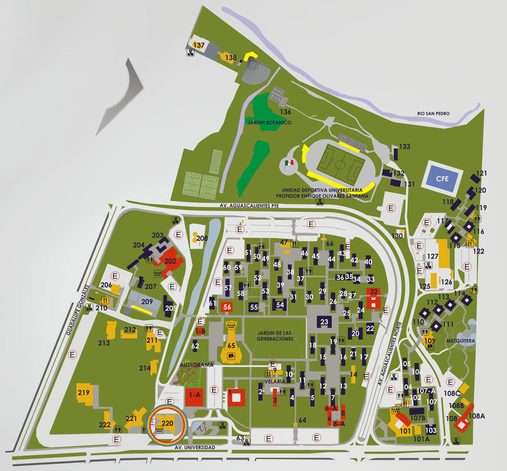

| Pagina Principal (home) | ||
TableroPáginas del sitioMis cursos |
PROGRAMACION DE SISTEMAS WEB (5 - A)
Profesor: GEORGINA SALAZAR PARTIDA
|
IR A LA SECCION DE IMAGENES |
ECUACIONES DIFERENCIALES (ED-A1) (5 - A)
Profesor: FRANCISCO JAVIER HUERTA JUAREZ |
Si ve esto, pongame 10 :D | |
Imagenes de la Universidad
